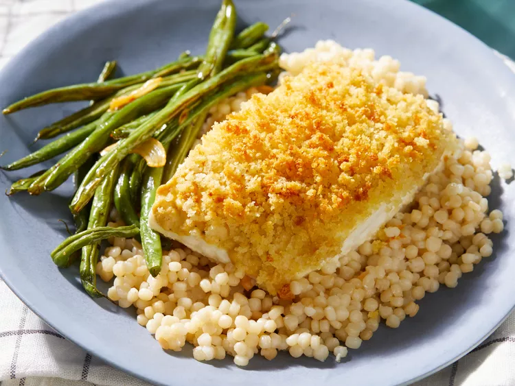

Baked Halibut with Crispy Panko

Baked halibut with crispy panko crust on a bed of couscous with a side of green beans
This baked halibut will just melt in your mouth! I like to serve this over quinoa kale salad. Also, please don't use regular bread crumbs as they are too dense.
Ingredients
- ½ cup panko bread crumbs
- 1 ½ tablespoons butter, melted
- ¼ cup chicken stock, or as needed
- 2 (8 ounce) fillets halibut
- 1 teaspoon lemon juice
- salt and ground black pepper to taste
- 1 tablespoon Dijon mustard
Steps
- Preheat the oven to 350 degrees F (175 degrees C).
- Stir together panko bread crumbs and melted butter in a bowl until well combined. Set aside.
- Pour enough chicken stock into an oven-proof skillet to cover the bottom; arrange halibut fillets in the skillet.
- Drizzle lemon juice over fillets; season with salt and pepper. Spread a thin layer of Dijon mustard over each fillet; press bread crumb mixture into mustard.
- Bake fish in the skillet in the preheated oven until fillets flake easily with a fork and topping is browned, about 20 minutes.